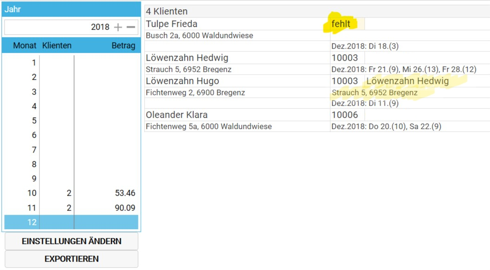
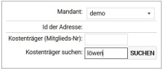
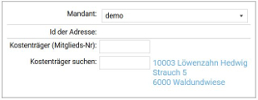
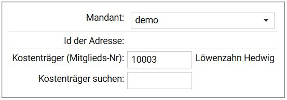

pflegebeitrag
Freigabe
Bevor der Pflegebeitrag für einen bestimmten Monat abgerechnet werden kann, muss der Monat freigegeben werden. Dies wird wie folgt durchgeführt:
- Im Programmbereich
Verwaltungden MenüpunktPflegebeitragwählen. - In der linken Liste die Zeile des Monats wählen (allfällige kurze Verzögerung aufgrund der Berechnungen abwarten).

- Bei Abweichungen von Name oder Adresse zwischen der Person in Pflege und der zugeordneten zahlenden Person aus der transdok-Vereinsverwaltung, wird dies angezeigt. Im Beispiel oben ist bei Löwenzahn Hugo die Löwenzahn Hedwig als Rechnungsempfängerin mit abweichender Anschrift zugeordnet.
Prüfen Sie die abweichenden Rechnungsempfänger auf Richtigkeit.
Personen, die keine Zuordnung eines Eintrags in der transdok-Vereinsverwaltung haben, werden oberhalb der Liste mit dem Hinweis
fehltangezeigt. Lesen Sie im nachfolgenden Abschnitt, wie die nachträgliche Zuordnung durchgeführt wird.Wenn keine Einträge mit dem Hinweis
fehltmehr vorhanden sind, erscheint links eine SchaltflächeFREIGEBEN. Nach dem Klicken dieser Schaltfläche kann in der transdok-Vereinsverwaltung die Verrechnung erfolgen.
Freigabe erst nach vollständiger Leistungserfassung
Geben Sie den Monat erst frei wenn alle Leistungen erfasst sind. Es erfolgt keine Nachverrechnung von Leistungen wenn diese nach der Freigabe eingetragen wurden.
Zuordnung
Hier ist beschrieben, wie eine (nachträgliche) Zuordnung einer Person zu einem Vereinsmitglied bzw. Rechnungsempfänger in der transdok-Vereinsverwaltung erfolgt.
- Im Programmbereich
Verwaltungden MenüpunktKlientenwählen. - Die entsprechende Person in der Liste wählen und bei Stammdaten auf
ändernklicken. - Das Register
Vereinsmanagerwählen. - transdok versucht aufgrund der Daten in der Vereinsverwaltung inklusive der dort erfassten Familienmitglieder einen passenden Eintrag vor zu schlagen. Wenn bei
Kostenträger (Mitglieds-Nr)bereits ein Wert steht, und die zusätzlich angezeigten Informationen stimmen, kann das Dialogfenster mitOkgeschlossen werden, um den Wert zu speichern. - Ansonsten können Sie selbst eine Suche in den Daten der Vereinsverwaltung durchführen, indem Sie bei
Kostenträger suchenmindestens vier Zeichen vom Namen des Vereinsmitglieds tippen und Tabulatur tippen oderSCUHENklicken, um das Ergebnis an zu zeigen.

- Das passende Ergebnis anklicken, um die Zuordnung durch zu führen. Im Feld
Kostenträgersteht dann die entsprechende Mitgliedsnummer. Wenn die Mitgliedsnummer bekannt ist, kann diese dort auch direkt eingetippt werden.

- Mit
Okdas Dialogfenster schließen um den Eintrag zu speichern.